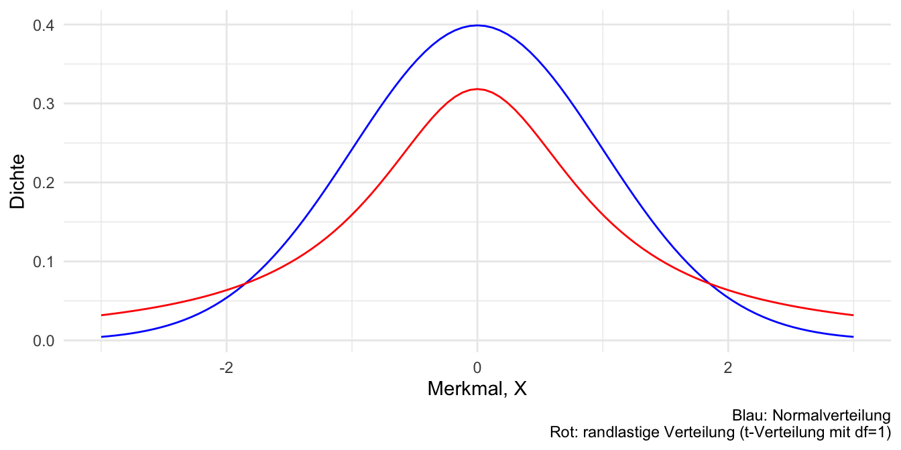
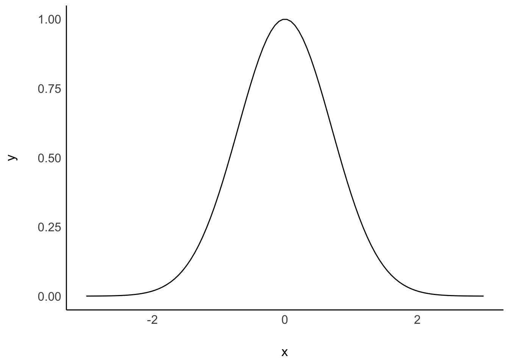
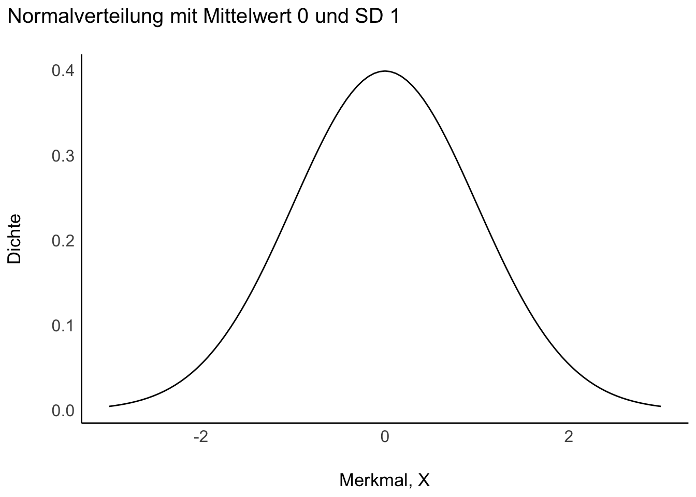

5 Verteilungen
5.1 Lernsteuerung
5.1.1 Lernziele
Nach Absolvieren des jeweiligen Kapitels sollen folgende Lernziele erreicht sein.
Sie können …
- den Begriff der Zufallsvariablen erläutern
- die Begriffe von Wahrscheinlichkeitsdichte und Verteilungsfunktion erläutern und anhand einfacher Beispiele ausrechnen
- den Begriff einer Gleichverteilung erläutern und einfache Fallbeispiele ausrechnen
- die Parameter einer Normalverteilung nennen und erläutern
5.1.2 Vorbereitung im Eigenstudium
Lesen Sie zusätzlich zum Stoff dieses Kapitels noch Bourier (2018), folgende Abschnitte:
- Kap. 6.1 (Zum Begriff Zufallsvariable)
- Kap. 6.3 (Stetige Zufallsvariablen)
- Kap. 7.1.1 (Binomialverteilung)
- Kap. 7.2.1 (Gleichverteilung) und 7.2.3 (Normalverteilung)
Lösen Sie auch die Übungsaufgaben dazu.
Weitere Übungsaufgaben finden Sie im dazugehörigen Übungsbuch, Bourier (2022).
5.1.3 Prüfungsrelevanter Stoff
Beachten Sie, dass neben den Inhalten des Kapitels auch stets der vorzubereitende Stoff prüfungsrelevant ist.
5.1.4 Benötigte R-Pakete
5.1.5 Zentrale Begriffe
5.1.5.1 Eigenschaften von Zufallsvariablen
- Zufallsvariable (random variable)
- Diskret vs. stetig
- Wahrscheinlichkeitsdichte (Dichte, (probability) density, f)
- Wahrscheinlichkeitsfunktion (kumulierte Wahrscheinlichkeit, Wahrscheinlichkeitsmasse)
5.1.5.2 Verteilungen
- Gleichverteilung
- Normalverteilung
- Standardnormalverteilung
5.1.6 Begleitvideos
5.2 Verteilungen
Eine Verteilung zeigt, welche Ausprägungen eine Variable aufweist und wie häufig bzw. wahrscheinlich diese sind. Einfach gesprochen, veranschaulicht eine Balken- oder Histogramm eine Verteilung. Man unterscheidet Häufigkeitsverteilungen (s. Abb. Abbildung 5.1) von Wahrscheinlichkeitsverteilungen (Abb. Abbildung 5.2).
5.2.1 Häufigkeitsverteilung
Die Häufigkeitsverteilung eines diskreten Merkmals \(X\) mit \(k\) Ausprägungen zeigt, wie häufig die einzelnen Ausprägungen sind. So hat die Variable Zylinder (in einem Datensatz) etwa die Ausprägungen 4,6 und 8.
Abb. Abbildung 5.1, links, visualisiert die Häufigkeitsverteilung von cyl.

cyl und hp (diskretisiert in 10 Körbe oder Gruppen)Ein stetiges Merkmal, wie hp (PS-Zahl), lässt sich durch Klassenbildung in ein diskretes umwandeln (diskretisieren), s. Abb. Abbildung 5.1, rechts.
5.2.2 Wahrscheinlichkeitsverteilung
Wahrscheinlichkeitsverteilungen dienen dazu, Ereignissen einer Zufallsvariable eine Wahrscheinlichkeit zuzuordnen.
Eine diskrete Wahrscheinlichkeitsverteilung der (diskreten) Zufallsvariablen \(X\) ordnet jeder der \(k\) Ausprägungen \(X=x\) eine Wahrscheinlichkeit \(p\) zu. So hat die Variable Geschlecht eines Babies die beiden Ausprägungen Mädchen und Junge mit den Wahrscheinlichkeiten \(p_M = 51.2\%\) bzw. \(p_J = 48.8\%\) (Gelman, Hill, und Vehtari 2021).
Bei stetigen Zufallsvarialben \(X\) geht man von unendlich vielen Ausprägungen aus; die Wahrscheinlichkeit einer bestimmten Ausprägung ist (praktisch) Null: \(p(X=x_j)=0, \quad j=1,...,+\infty\). So ist die Wahrscheinlichkeit, dass eine Person exakt 166,66666666… cm groß ist, (praktisch) Null. Man gibt stattdessen die Dichte der Wahrscheinlichkeit an: Das ist die Wahrscheinlichkeit(smasse) pro Einheit von \(X\).
5.3 Gleichverteilung
5.3.1 Indifferenz als Grundlage
Eine Gleichverteilung nimmt an, dass jeder Wert im Ergebnisraum der zugehörigen Zufallsvariable gleichwahrscheinlich ist. Wenn man keinen hinreichenden Grund hat, eine Realisation einer Zufallsvariablen für plausibler als einen anderen zu halten, ist eine Gleichverteilung eine passende Verteilung. Gleichverteilungen gibt es im diskreten und im stetigen Fall.
Abb. Abbildung 5.2 zeigt ein Beispiel für eine (stetige) Gleichverteilung.

Bei \(X=0\) hat eine Einheit von \(X\) die Wahrscheinlichkeitsmasse von 50%.
Definierendes Kennzeichen einer Gleichverteilung ist die konstante Dichte.
5.3.2 Simulation
Möchte man die Verteilungsfunktion einer stetigen Zufallsvariablen berechnen, kann das ganz schön kompliziert werden, schließlich muss man Integrale lösen. Aber es gibt einen Trick, wie man die Sache stark vereinfachen kann: man simuliert die Verteilung. Was bedeutet das?
Angenommen, die Wartezeit auf einen Bus ist gleichverteilt (engl. uniform distribution); der Bus kommt regelmäßig und püunktlich alle 10 Minuten. Die minimale Wartezeit beträgt also 0 Minuten und die maximale 10 Minuten. Nennen wir die zugehörige Zufallsvariable \(X\), das ist schön kurz.
Dann schreibt man auch:
\[X \sim Unif(0,10).\]
Ja, das sieht fancy aus, aber wo ist der versprochene Trick zum Vereinfachen? Kommt gleich, Moment.
Eine Frage könnte nun lauten, wie groß ist die Wahrscheinlichkeit, dass man zwischen 3 und 5 Minuten auf den Bus warten muss?
Der Trick ist, dass wir Integralrechnung gegen stumpfes Zählen eintauschen.
Computer (und damit R) haben eingebaut Funktionen, die eine beliebige Zufallszahl ziehen können, zum Beispiel gleichverteilt
Auf Errisch heißt das Zauberwort runif():
runif(n = 1, min = 0, max = 10)## [1] 9.14806Auf Deutsch heißt das: “Hey R, ich hätte gerne eine (daher n = 1) Zufallszahl r wie random, die gleichverteilt ist (uniform) mit min = 0 und max = 10.
(Zu) anschaulich gesprochen: R hat den Bus kommen lassen und es hat gut 9.1 Minuten gedauert, bis er da war.
Achtung, jetzt kommt’s: Jetzt lassen wir R mal \(10^5\) (1e5 auf Computersprech) Busse vorfahren. R soll jedes Mal notieren, wie lange man auf den Bus warten musste.1
x_simu <- runif(n = 1e5, min = 0, max = 10)Schauen wir uns die Verteilung an, Abbildung 5.3.
ggplot(x_simu_df) +
aes(x = x_simu) +
geom_histogram(bins = 50)
Okay, unsere Verteilung sieht nicht exakt gleichverteilt, aber einigermaßen. Gut genug für unsere Zwecke!
So, und jetzt kommt das Ernten. Wir können jetzt nämlich einfach zählen (count()), um die Antwort auf unsere Frage (der Wartezeit 3-5 Min.) zu erhalten.
Das Zeichen & ist das logische UND, also die Schnittmenge der zwei Mengen \(A := \{x|x>3\}\) und \(B := \{x|x<5\}\), also \(A \cap B\).
Wie man sieht, fallen ca. 20% der Stichproben in den entsprechenden Bereich.
Da viele Probleme, wenn sie komplexer werden, kaum noch analytisch (wie Integrieren) ausrechenbar sind, greift man in der modernen (Analyse-)Welt oft lieber auf Simulationsverfahren zurück - Dank sei den schnellen Rechnern. Für uns Menschen ist damit die Aufgabe des Integrierens auf schnödes Zählen zurückgeführt.
5.4 Binomialverteilung
Die Binomialverteilung dient zur Darstellung der Wahrscheinlichkeit der Ergebnisse eines wiederholten binomialen Zufallexperiments, eines Zufallsexperiments mit zwei Ergebnissen also. Typisches Beispiel ist ein Münzwurf. Bei jeder Wiederholung des Zufallexperiments bleibt die Wahrscheinlichkeit der Ergebnisse gleich: Die Münze verändert sich nicht durch die Würfe (Ziehen mit Zurücklegen). Außerdem hat ein bestimmtes Ergebnis im ersten Wurf keinen Einfluss auf die Wahrscheinlichkeit eines bestimmten Ergebnisses im zweiten Wurf, etc.
5.4.1 Veranschaulichung
Stellen wir uns eine Kistchen2 mit 5 Losen vor, darunter 2 Treffer (Gewinn) und 3 Nieten, s. Abb. Abbildung 5.4. Der Versuch läuft so ab: Wir ziehen ein Los, schauen ob es ein Treffer ist oder nicht, legen es zurück und ziehen erneut.

Um die Wahrscheinlichkeitsverteilung einer binomialverteilte Zufallsvariable ausrechnen zu können, muss man zwei Dinge wissen: Erstens die Anzahl der Züge, \(n\) (Stichprobengröße) und zweitens die Trefferwahrscheinlichkeit, \(p\).
Wie groß ist die Wahrscheinlichkeit von \(A^{\prime}\), d.h. bei \(n=4\) Zügen \(x=2\) Treffer zu erzielen, gegeben dass die Trefferwahrscheinlichkeit bei \(p=2/4\) liegt?
Wir könnten jetzt ein Baumdiagramm zeichnen und pro Pfad die Wahrscheinlichkeit ausrechnen (Multiplikationssatz), s. Abbildung 4.9. Die Summe der Wahrscheinlichkeiten der Pfade ist dann die gesuchte Wahrscheinlichkeit, \(W\) (Additionssatz). Das ist einfach, dauert aber.
In diesem Fall ist die Wahrscheinlichkeit eines (günstigen) Pfades, \(A\):
\(P(A) = P(T)^2 \cdot P(N)^2 = \left( \frac{2}{5} \right)^2 \cdot \left( \frac{3}{5} \right) ^2\).
p_a = (2/5)^2 * (3/5)^2
p_a
## [1] 0.0576Etwas mühevolles Zählen der Pfade würde uns zeigen, dass es \(k=6\) Pfade gibt, die alle die gleiche Wahrscheinlichkeit, \(P(A)\), aufweisen.
Damit beträgt die Wahrscheinlichkeit des gesuchten Ereignisses \(A^{\prime}\) (2 Treffer bei 4 Zügen):
\(P(A^{\prime}) = 6 \cdot P(A)\).
p_a_strich = 6 * p_a
p_a_strich
## [1] 0.3456Mithilfe der Formel der Binomialverteilung lässt sich das Ergebnis, die Wahrscheinlichkeit von \(A^{\prime}\) schneller ausrechnen. Einfach gesprochen sieht sie so aus:
\[P(A^{\prime}) = k \cdot P(A)\] Dabei steht \(k\) für die Anzahl der günstigen Pfade und \(P(A)\) für die Wahrscheinlichkeit eines günstigen Pfades (d.h. 2 Treffer und 2 Nieten) und alle Pfade haben die gleiche Wahrscheinlichkeit.
Die Anzahl der Pfade kann man mit dem Binomialkoeffizient ausrechnen, den man so darstellt:
\(\tbinom{n}{k}\)
Lies: “Wähle aus \(n\) möglichen Ereignissen (Pfade im Baum) \(k\) günstige Ereignisse (günstige Pfade).
Auf Errisch geht das so:
choose(4,2)
## [1] 65.4.2 Rechnen mit R
Die Binomialverteilung ist in R eingebaut; man kann sich leicht entsprechende Wahrscheinlichkeiten ausrechnen lassen.
Die Wahrscheinlichkeit, bei 4 Zügen 2 Treffer zu erzielen mit \(p=2/5\) unter der Annahme einer Binomialverteilung lässt sich so mit R berechnen:
dbinom(x = 2, size = 4, prob = 2/5)
## [1] 0.3456Beispiel 5.1 (Pumpstation-Beispiel zur Binomialverteilung) In einer Pumpstation arbeiten 7 Motoren, die wir als identisch annehmen. Mit einer Wahrscheinlichkeit von 5% fällt ein Motor aus und ist für den Rest des Tages nicht einsatzbereit. Der Betrieb kann aufrecht erhalten werden, solange mindestens 5 Motoren arbeiten. Wie groß ist die Wahrscheinlichkeit, dass die Pumpstation aus dem Betrieb fällt?
\(P(X=k)\) (oder kurz: \(P(k)\)) gibt die Wahrscheinlichkeit (Wahrscheinlichkeitsfunktion) an für das Ereignis, dass k Motoren arbeiten.
Lassen wir R mal \(P(X=5)\) ausrechnen.
dbinom(x = 5, size = 7, prob = .95)
## [1] 0.0406235Es gilt also \(P(X=5) \approx .04\). Die Wahrscheinlichkeit, dass (nur) 5 Motoren laufen an einem beliebigen Tag ist relativ gering3.
dbinom() steht für die Wahrscheinlichkeitsdichte (im diskreten Fall, also hier, Wahrscheinlichkeitsfunktion genannt) und binom für die Binomialverteilung. x gibt die Anzahl der Treffer an (das gesuchte Ereignis, hier 5 Motoren arbeiten); size gibt die Stichprobengröße an (hier 7 Motoren).
Damit gilt:
\(P(X\ge 5) = P(X=5) + P(X=6) + P(X=7)\)
Die Wahrscheinlichkeit, dass mind. 5 Motoren arbeiten beträgt also 0.9962.
Das Komplement zu diesem Ereignis ist, dass nicht mind. 5 Motoren arbeiten, also höchstens 4 und es daher zu einem Ausfall kommt.
Natürlich gilt \(P(\bar{X}) = 1- P(X)\).
p_weniger_als_4 <- 1 - p_mind_5
p_weniger_als_4
## [1] 0.003757043Alternativ kann man mit der Verteilungsfunktion rechnen: \(P(X \le 4)\).
In R kann man dafür die Funktion pbinom() nutzen (p für (kumulierte) Wahrscheinlichkeit).
pbinom(q = 4, size = 7, prob = .95)
## [1] 0.003757043q = 4 steht für \(X \le 4\), also für höchstens 4 Treffer (arbeitende Motoren); size = 7 meint die Stichprobengröße, hier 7 Motoren.
Die Funktion, die die Wahrscheinlichkeit dafür angibt, dass die diskrete Zufallsvariable \(X\) eine Realisation annimmt, die kleiner oder gleich (höchstens) einem Wert \(X=x\) ist, heißt Verteilungsfunktion.
\(F(X=x) = P(X \le x)\)
5.4.3 Simulieren
Die Binomialverteilung lässt sich gut als “Münzwurf-Verteilung” auffassen.
Werfen wir eine Münze und sehen wir, was passiert.
Mit sample() ziehen wir eine Stichprobe aus dem Ereignisraum x, hier 0 und 1. Dabei vereinbaren wir (willkürlich), dass 0 für “Kopf” steht und 1 für “Zahl”. size = 1 bedeutet, wir werfen die Münze ein Mal (d.h. Stichprobengröße size ist 1).
Okay, noch an Bord? Dann werfen wir die Münze 10 Mal:
replace = TRUE heißt, wir legen die Münze wieder zurück auf den Tisch, wenn wir sie geworfen haben. Oder anders ausgedrückt: Ziehen mit Zurücklegen.
R, mach dich bereit, wirf die Münze 1000 (\(n=10^3\) oder 1e3) Mal4:
Mit sum() nach dem Pfeifensymbol %>% haben wir aus dem Vektor muenze_oft, der aus der ersten Zeile resultiert, die Summe ausgerechnet.
Jetzt wissen wir, wie oft die Münze “Zahl” gezeigt hat, nämlich 539 Mal.
Wenn Sie einen Zufallsversuch wiederholen, muss nicht jedes Mal das gleiche Ergebnis resultieren. Entsprechend wird bei wiederholten Ausführung der Funktion sample() nicht immer das gleiche Ergebnis resultieren. Wundern Sie sich also nicht, wenn bei Ihrem Computer eine ähnliche, aber nicht gleiche, Zahl herauskommt.
Visualisieren wir mal unsere Münzwürfe. Dazu erstellen wir zuerst eine geeignete Tabelle, Tabelle 5.1.
| id | x | x_cumsum |
|---|---|---|
| 1 | 1 | 1.0000000 |
| 2 | 1 | 1.0000000 |
| 3 | 0 | 0.6666667 |
| 4 | 0 | 0.5000000 |
| 5 | 1 | 0.6000000 |
| 6 | 1 | 0.6666667 |
Und hier der Anteil von “Zahl” im Verlauf unserer Münzwürfe, s. Abbildung 5.5.

Grob gesagt scheint sich ein Münzwurf nach, naja, vielleicht 500 Würfen “einigermaßen” zu stabilisieren.5
Das Gesetz der großen Zahl
Zieht man (zufällig) immer mehr Werte aus einer Verteilung (mit endlichem Mittelwert), nähert sich der Mittelwert der Stichprobe immer mehr mit dem Mittelwert (oft als Erwartungswert bezeichnet) der Verteilung an
5.5 Normalverteilung
Normalverteilungen haben eine charakteristische Glockenform; sie sind symmetrisch6. Normalverteilungen können sich unterscheiden Mittelwert \(\mu\) und ihrer Streuung, \(\sigma\). Diese beiden Größen (“Parameter”) determinieren den Graphen einer bestimmten Normalverteilungsfunktion, s. Abbildung 5.6. Sind diese beiden Parameter bekannt, so ist die Dichte jedes beliebigen Datenpunkts (aus dieser Normalverteilung) bestimmt.
5.6 Parameter
Ein Parameter (einer Verteilung) legt die “Varianten” einer Verteilung fest. Durch die Wahl der Parameterwerte nimmt eine Verteilung eine genaue Form an.

Beispiel: Wie groß sind Studentis (Quelle des Datensatzes)?
Das Quantil von z.B. 25% zeigt die Körpergröße der 25% kleinsten Studentis an, analog für 50%, 75%:
| q25 | q50 | q75 |
|---|---|---|
| 160.02 | 167.64 | 175.26 |
Abbildung 5.7 zeigt eine Visualisierung der Quantile.

Das 25%-Quantil nennt man 1. Quartil, das 50%-Quantil auch 2. Quartil, das 75%-Quantil das 3. Quartil, und das 100%-Quantil (Maximalwert) das 4. Quartil.
5.6.1 Normal auf dem Fußballfeld
Sie und 100 Ihrer besten Freunde stehen auf der Mittellinie eines Fußballfelds. Auf Kommando werfen alle jeweils eine Münze; bei Kopf geht man einen Schritt nach links, bei Zahl nach rechts. Das wird 16 Mal wiederholt. Wie wird die Verteilung der Positionen wohl aussehen?

5.6.2 Normal durch Addieren
Die Summe vieler (gleich starker) Zufallswerte (aus der gleichen Verteilung) erzeugt eine Normalverteilung; egal aus welcher Verteilung die Zufallswerte kommen (Zentraler Grenzwertsatz), vgl. Abbildung 5.8.

Nicht verwechseln:

5.6.3 Normalverteilung vs. randlastige Verteilungen

Bei randlastigen Verteilungen (“fat tails”) kommen Extremereignisse viel häufiger vor als bei Normalverteilungen. Deshalb ist es wichtig sein, zu wissen, ob eine Normalverteilung oder eine randlastige Verteilung vorliegt. Viele statistische Methoden sind nicht zuverlässig bei (stark) randlastigen Methoden.
5.6.4 Beispiele für Normal- und randlastige Verteilungen
Normal verteilt:
- Größe
- Münzwürfe
- Gewicht
- IQ
- Blutdruck
- Ausschuss einer Maschine
Randlastig verteilt:
- Vermögen
- Verkaufte Bücher
- Ruhm
- Aktienkurse
- Erdbeben
- Pandemien
- Kriege
- Erfolg auf Tinder
- Meteroritengröße
- Stadtgrößen
5.6.5 Formel der Normalverteilung
Vereinfacht ausgedrückt lässt die Normalverteilung \(\mathcal{N}\) durch Exponenzieren einer Quadratfunktion beschreiben:
\[\mathcal{N} \propto e^{-x^2}\]
mit \(e=2.71...\), der Eulerschen Zahl.7

Eine Normalverteilung mit \(\mu=0\) und \(\sigma=1\) nennt man auch Standardnormalverteilung und man schreibt:
\[IQ \sim \mathcal{N}(0,1)\]
Die Normalverteilung wird auch Gauss-Verteilung oder Glockenkurve genannt.
5.6.6 Simulation einer Normalverteilung
R hat eine Funktion eingebaut zur Erzeugung von Zufallszahlen (Zufallszahlengenerator), z.B. normalverteilte. Man übergibt dieser Funktion den gewünschten Mittelwert und die gewünschte Streuung und die Funktion zieht dann zufällig Werte aus dieser Verteilung.
Diesen Zufallszahlengenerator kann man mit einem Duschkopf vergleichen, s. Abbildung 5.9. An diesem Duschkopf kann man einen Schwenker einstellen, der den Duschkopf ausrichtet, also steuert, ob die Wassertropfen weit in die eine oder die andere Richtugn fallen. Zweitens hat unser Duschkopf noch einen Streuregler, der den Wasserstrahl entweder eng bündelt8 oder weit auseinanderfächert. Im ersten Fall fällt der Wasserstrahl eng und schmal aus. Im zweiten Fall fällt der Wasserstrahl breit aus.

Quelle: John Kruschke.
Eine Zufallszahl (random number), die normalverteilt ist, mit \(\mu=0\) und \(\sigma=1\) kann man in R so erzeugen:
rnorm(n = 1, mean = 0, sd = 1)
## [1] 0.2664096Ein Fallbeispiel: Der Inhalt einer Tüte mit Zucker, \(X\), sei normalverteilt mit \(\mu = 10002\) g und \(\sigma=1.5\) g. Aus vertragsrechtlichen Gründen darf das Füllgewicht von 1000g nicht unterschritten werden, sonst drohen Konventionalstrafen.
Wie groß ist die Wahrscheinlichkeit, dass 1000g unterschritten werden?
Simulieren wir uns 1e4 Zuckertüten!
| id | x |
|---|---|
| 1 | 1002.479 |
| 2 | 1001.216 |
| 3 | 1003.320 |
| 4 | 1001.173 |
| 5 | 1001.465 |
| 6 | 1003.843 |
Zählen wir, viele der Zuckertüten ein Gewicht von weniger als 1000g aufweisen:
Ein ziemlich9 kleiner Anteil. Rechnen wir uns noch die Anteile (proportion) aus:
5.6.7 IQ-Verteilung
Die Verteilung der Zufallsvariablen IQ ist normalverteilt mit einem Mittelwert von 100 und einer Streuung von 15, s. Abbildung 5.10:
\(IQ \sim \mathcal{N}(100,15)\)
- Wie schlau muss man sein, um zu den unteren 75%, 50%, 25%, 5%, 1% zu gehören?
- Anders gesagt: Welcher IQ-Wert wird von 75%, 50%, … der Leute nicht überschritten?

Quelle:: John Kruschke.
Ziehen wir zufällig \(1e4\) Stichproben aus \(\mathcal{N}(100,15)\) und berechnen die Quantile:
| p | q |
|---|---|
| 0.75 | 110 |
| 0.50 | 100 |
| 0.25 | 90 |
| 0.05 | 75 |
| 0.01 | 65 |
Das Quantil \(q\) zur kumulierten Wahrscheinlichkeit \(p=75\) ist 110, etc.
Umgekehrt können wir uns auch fragen: Gegeben einer Realisation der Zufallsvariablen (z.B. IQ), was ist die zugehörige Wahrscheinlichkeit (Wert der Verteilungsfunktion?)
- Welcher Anteil der Fläche unter der Kurve \(p\) gehört zu den IQ-Werten 75, 100, 115, 130?
- Anders gesagt: Welcher Anteil der Wahrscheinlichkeitsmasse der Verteilung liegt unter IQ=75, IQ=100, etc.?
Ziehen wir Stichproben aus \(\mathcal{N}(100,15)\):
| p_100 | n | prop |
|---|---|---|
| FALSE | 5143 | 0.51 |
| TRUE | 4857 | 0.49 |
Anstelle von iq < 100 kann man iq < 115 einsetzen, etc.
Die Verteilungsfunktion (der Anteil der Wahrscheinlichkeitsmasse), p, für IQ-Werte nicht größer als 100, \(IQ\le100\), ist 50%, etc.
5.6.8 Quantile der Normalverteilung
-
Quantile teilen eine Verteilung so ein, dass ein Anteil \(p\) kleiner oder gleich und der andere Teil \(1-p\) größer dem Quantil \(q\) ist.
- Beispiel: “50%-Quantil = 100” meint, dass 50% der Elemente der Verteilung einen Wert kleiner oder gleich als 100 haben.
- Die Verteilungsfunktion F (für einen Wert \(x\)) gibt die Wahrscheinlichkeit an, dass die zugehörige Zufallsvariable \(X\) einen Wert höchstens so groß wie \(x\) annimmt. Sie zeigt also die kumulierte Wahrscheinlichkeit \([-\infty, q)\).
- Beispiel: “F(100) = 50%” meint: Die Wahrscheinlichkeit für eine Ausprägung von höchstens als 100 beträgt 50%.
Schauen wir uns die Quartile der Normalverteilung einmal näher an. Wir gehen von einer Normalverteilung aus, wie sie zur Beschreibung von Intelligenz (IQ) verwendet wird, s. Abbildung 5.11.

\[IQ \sim \mathcal{N}(100, 15)\] Mit R kann man sich die beiden Größen komfortabel berechnen lassen:
Betrachten wir einige wichtigen Quantile, s. Abbildung 5.12.

5.6.9 Standardnormalverteilung

Bei \(X=0\):
- hat eine Einheit von \(X\) die Wahrscheinlichkeitsmasse von 40% (Wahrscheinlichkeitsdichte)
- sind 50% der Wahrscheinlichkeitsmasse (Fläche unter der Kurve) kleiner als dieser Wert (Verteilungsfunktion).
In Summe liegen 100% der Wahrscheinlichkeitsmasse unter der Kurve.
5.6.10 Normalverteilung als konservative Wahl
Dem Mathematiker Carl Friedrich Gauss (s. Abbildung 5.13) wird die Ehre zuerkannt, die Normalverteilung eingeführt zu haben.

Quelle: Uni Greifswald, Public domain, via Wikimedia Commons
Ontologische Begründung
- Wirken viele, gleichstarke Einflüsse additiv zusammen, entsteht eine Normalverteilung (mcelreath_statistical_2020?), Kap. 4.1.4.
Epistemologische Begründung
- Wenn wir nur wissen, dass eine Variable über einen endlichen Mittelwert und eine endliche Varianz verfügt und wir keine weiteren Annahmen treffen bzw. über kein weiteres Vorwissen verfügen, dann ist die Normalverteilung die plausibelste Verteilung (maximale Entropie) (mcelreath_statistical_2020?), Kap. 7 und 10.
5.7 Aufgaben
Zusätzlich zu den Aufgaben im Buch:
5.8 —

Machen Sie das mal ohne Computer, wenn Sie ein Wochenende Langeweile haben.↩︎
In den Lehrbüchern häufig als Urne bezeichnet, was den bösen Spott von “Friedhofstatistik” nach sich zog.↩︎
wobei “gering” subjektiv ist, die Betreiberfirma findet diese Wahrscheinlichkeit, dass 2 Pumpen ausfallen, wohl viel zu hoch.↩︎
R meckert nicht bei langweiligen Aufgaben.↩︎
Was “einigermaßen” bedeuten soll, ist kein statistischer Begriff, sondern einer, der im echten Leben von den Menschen beantwortet werden muss, die eine Entscheidung zu treffen haben.↩︎
d.h. die Schiefe (
skewness) ist 0↩︎Das Zeichen \(y \propto x\) bedeutet “x ist proportional zu y”, also \(y = mx\).↩︎
Massagedusche, behauptet der Hersteller↩︎
“Ziemlich” ist natürlich subjektiv; je nach Situation kann es zu viel oder nicht zu viel sein.↩︎